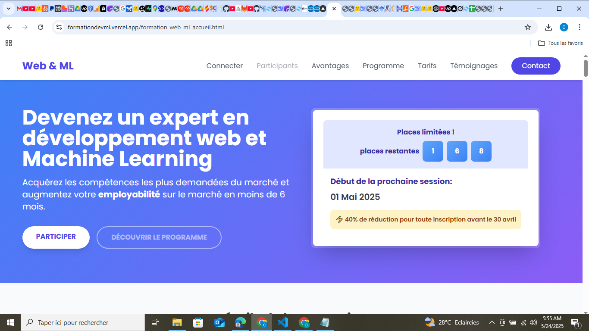
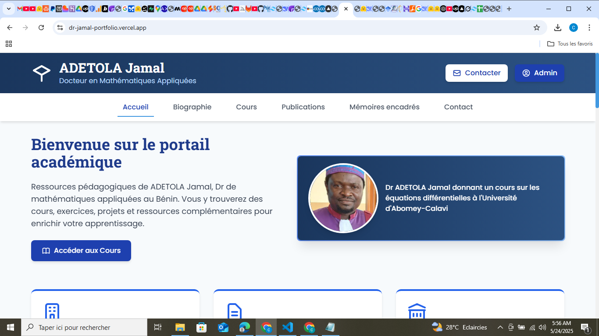
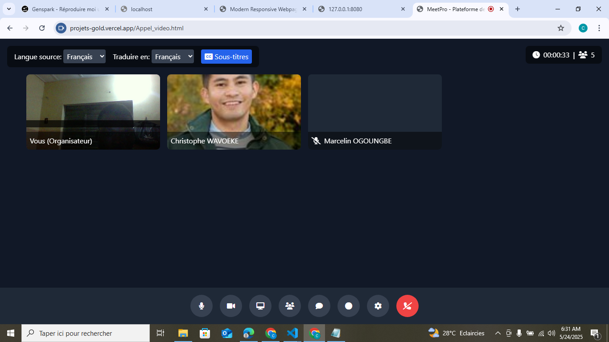
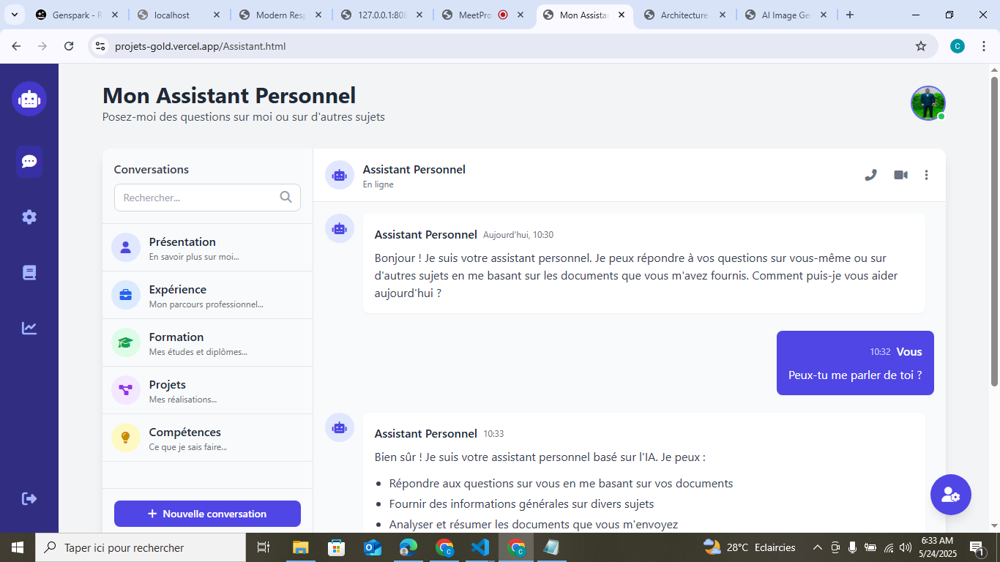
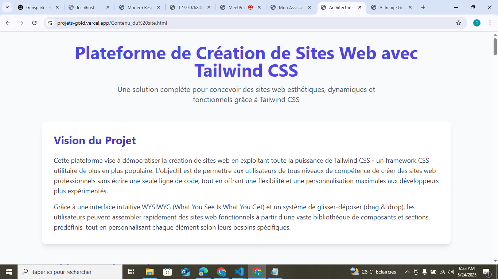
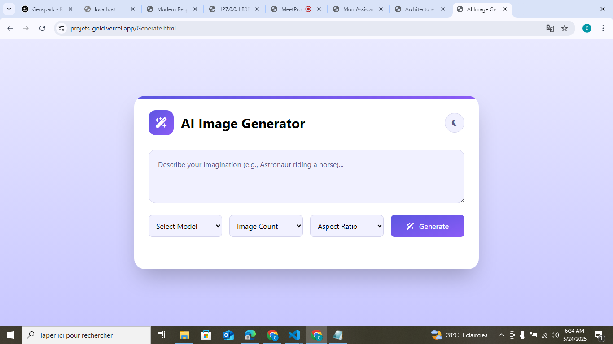

Les premiers pas vers le savoir ne sont jamais faciles. Entre les larmes et l’incertitude, c’est un voyage qui commence, main dans la main avec ceux qui croient en nous
Les années passent, et le sourire s'élargit. Le cartable devient un compagnon d'aventure, et chaque jour est une nouvelle occasion d'apprendre, de rêver et de se dépasser.
L'apprentissage prend une autre dimension. Les amitiés forgées, les nuits blanches de révision et les ambitions grandissent. C’est le début d’une quête vers l'excellence et la réalisation de soi.

Des années d’efforts qui se matérialisent enfin. Entre responsabilités, passion et défis quotidiens, chaque projet accompli est un pas de plus vers l’accomplissement de son rêve.

Je m'appelle : Christophe Wavoeke, ingénieur en Génie Mathématique, spécialisé en modélisation et en programmation informatique.

Après l'obtention de mon baccalauréat, ma passion pour les mathématiques m'a poussé à passer deux concours : celui pour l'ENS (École Normale Supérieure) de Natitingou et celui de l'INSPEI (Institut National Supérieur des Classes Préparatoires aux Études d'Ingénieur)

j'ai commencé à me former moi-même aux langages de programmation web avec un ami. En environ huit mois, j'ai maîtrisé le HTML, CSS, PHP et JavaScript, ce qui m'a permis de réaliser de petits projets sur mon ordinateur

Une solution complète pour aider les nouveaux étudiants à vite s'intégrer dans la programmation informatique.
Voir le projet
Le professionnalisme demande une présence sur le net avec une Optimisation de la visibilité.
Voir le projet
Un projet en cours non achevé.
Voir le projet
Site en cours de travail .
Voir le projet
Description du plan de création d'un CMS de crétion de site web avec possibilité d'exporter le code Tailwind.
Voir le projet
Projet de génération d'image avec les modèle d'IA existant ou via les API des IA.
Voir le projetBackend Compétences
Frontend Compétences


Ingénieur en ILRO ( Informatique , Logistique et Recherche Opérationnelle)
Spécialiste en développement backend et en développement Mobile
Ingénieur en Informatique
Je fais plus designer UX / Figma pour les interfaces mobile et web .

Ingénieur en Modélisation et Simulation Numérique
Résolution des problèmes sous forme de dérivée partielle qui répond à un phénomème explicable

Ingénieur en Finance et Statistique
Entièrement dévoué dans les domaines de Fintech

Ingénieur en numérique
Je fais aussi développeur front-end
Ingénieur en modélisation Aléatoire et Statistique
Je suis spécialisé dans l'analyse des prets de crédits et de la prédiction d'évènement

Ingénieur en Modélisation aléatoire et statistique
Je suis spécialisé dans l'analyse des tendances du marché boursier
Ingénieure en Statistique et data analysis
Spécialisée dans l'analyse de pipeline de données
Ingénieure en analyse de donnée IA
Spécialisée en analyse de donnée avec des modèles d'Intélligence Artificielle
Travailler avec Christophe est un plaisir au quotidien : il sait allier expertise technique et esprit d’équipe pour livrer des solutions innovantes.
Son aisance aussi bien en front-end qu’en back-end fait de lui un véritable atout sur tous nos projets, toujours prêt à relever les défis techniques avec brio
Grâce à son souci du détail et sa compréhension des besoins utilisateurs, il transforme nos maquettes en interfaces fluides et performantes.


.jpeg)

.jpeg)
.jpeg)

.jpeg)